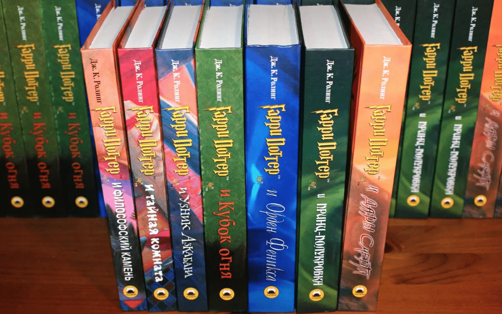
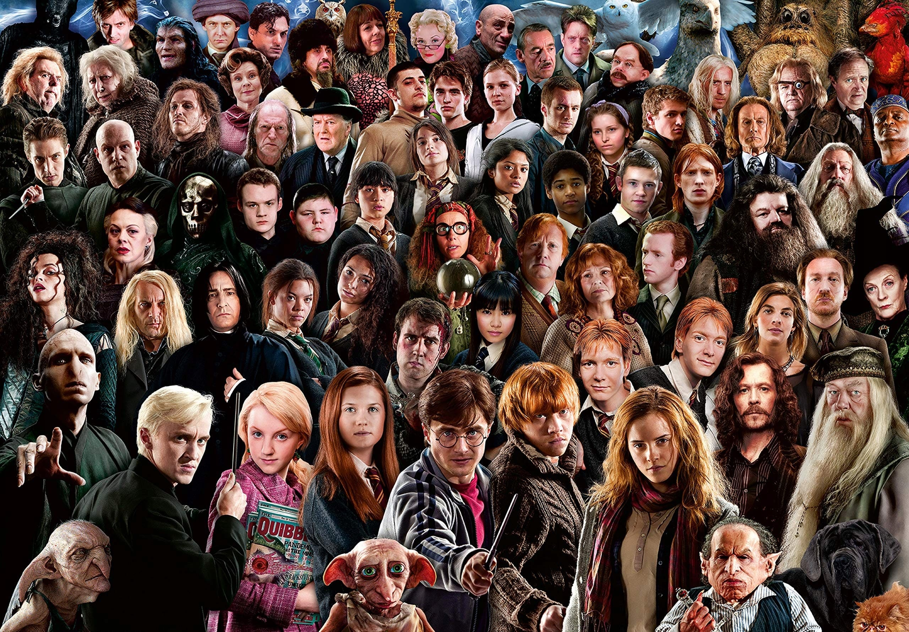

Гарри Поттер
Краткое описание
Серия романов, написанная британской писательницей Дж. К. Роулинг. Книги представляют собой хронику приключений юного волшебника Гарри Поттера, а также его друзей Рона Уизли и Гермионы Грейнджер, обучающихся в школе чародейства и волшебства Хогвартс. Основной сюжет посвящён противостоянию Гарри и тёмного волшебника по имени лорд Волан-де-Морт, в чьи цели входит обретение бессмертия и порабощение магического мира. Начиная с публикации первого романа «Гарри Поттер и философский камень» 26 июня 1997 года книги серии обрели огромную популярность, признание критиков и коммерческий успех во всём мире. По состоянию на февраль 2018 года количество проданных книг составило около 500 миллионов экземпляров, вследствие чего серия вошла в список литературных бестселлеров. Романы переведены на 80 языков, в том числе на русский. Последние четыре книги последовательно поставили рекорды, как наиболее быстро продаваемые литературные произведения в истории.
Персонажи
Интересные факты
- Книги про Гарри Поттера есть на 67 языках мира.
- В первые сутки после выхода книги «Гарри Поттер и Дары Смерти» было продано около 11 миллионов экземпляров.
- Гарри Поттер и писательница Джоан Роулинг празднуют День рождения в один день.
- Книги про Гарри Поттера запрещены в Соединенных Штатах Америки.
- Волдеморт умер в последнем романе про Гарри Поттера. Ему на тот момент было 71 год.
- Лестницы, которые передвигались в фильме про Гарри Поттера, – это всего лишь одна лестница, а остальные добавлены при помощи компьютерной графики.
- Для одного Гарри Поттера было создано 160 пар очков и 70 волшебных палочек.
- Образ Гермионы из Гарри Поттера Джоан Роулинг описывала как себя в 11 лет.
- Дамблдор умер в 116 лет.
- Актриса, которая сыграла Плаксу Миртл в фильме про Гарри Поттера, на момент съемок была в возрасте 37 лет. Она была самой старшей в актерском составе и зовут ее Ширли Хендерсон.
- Название для школы Джоан Роулинг придумала от увиденного в Нью-Йорке растения.
- Когда книги о Гарри Поттере выпустили в Англии, их просили не выпускать в продажу, пока у детей не начнутся каникулы.
- Каждые 30 секунд кто-нибудь начинает читать книги о Гарри Поттере.
- Примерно 200 существ было создано для всех фильмов про Гарри Поттера.
- Шрам на лбу Гарри Поттера создавали примерно 5800 раз. При этом на дублеров и каскадеров его нанесли 3800 раз, а самому актеру Дэниэлу Рэдклифу около 2000 раз.
- Первые и последние слова Добби в книгах: «Гарри Поттер».
- Джоан Роулинг долго сожалела о том, что в итоге Гермиона осталась не с Гарри, а с Роном.